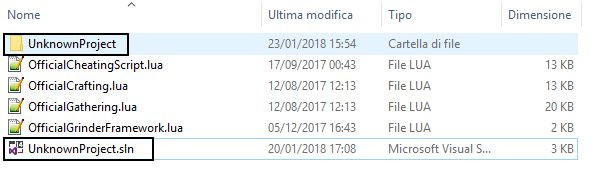
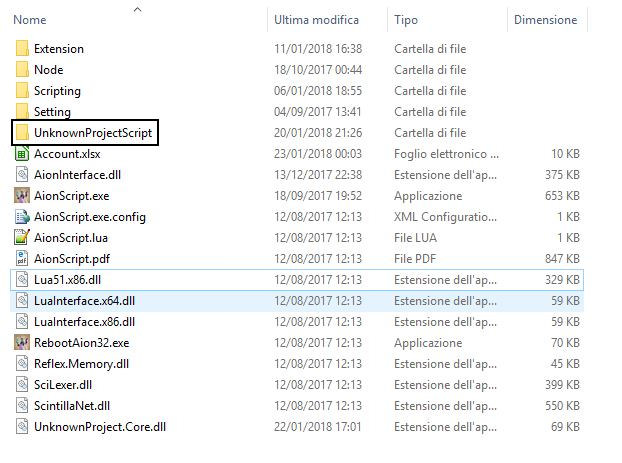
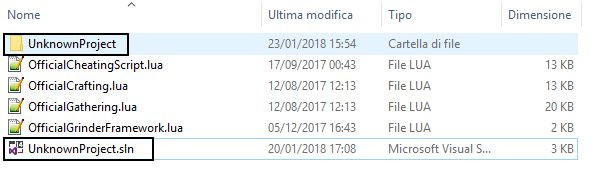
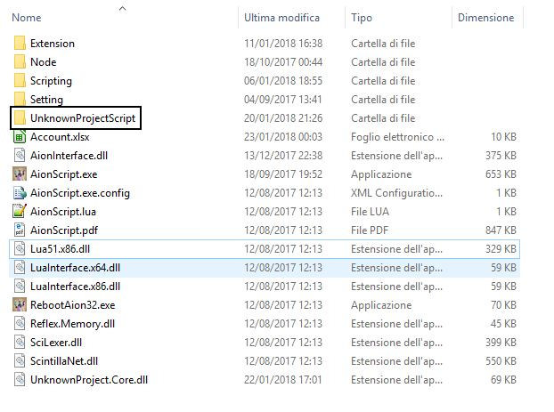

UnknownProject 23.01.2018
Posted: Sun Jan 21, 2018 6:44 pm
What UnknowProject is?
The idea that lead to the creation of this project was to create a framework to provide useful tools to the community to facilitate writing (and I also hope sharing) of your own scripts without having to face the difficulty of writing all the code from scratch.
UnknownProject is a framework written entirely in C#. Most features can be extended and customized thanks to the versatility of C#.
This framework provides users with a graphical interface from which you can set your personal settings. Each script then has its own panel staff to further customize the script.
How to install
1) Copy "UnknownProject" folder inside "Scripting" folder

2) Copy "UnknownProject.Core.dll" inside your AionScript folder

3) Create a new folder inside AionScript folder and name it "UnknownProjectScript"

Available Class:
Feature
Exping new character
How to write your own script
TO DO
VERY IMPORTANT SETTINGS: Zoom visual like first person. DON'T minimize the client
The idea that lead to the creation of this project was to create a framework to provide useful tools to the community to facilitate writing (and I also hope sharing) of your own scripts without having to face the difficulty of writing all the code from scratch.
UnknownProject is a framework written entirely in C#. Most features can be extended and customized thanks to the versatility of C#.
This framework provides users with a graphical interface from which you can set your personal settings. Each script then has its own panel staff to further customize the script.
How to install
1) Copy "UnknownProject" folder inside "Scripting" folder

2) Copy "UnknownProject.Core.dll" inside your AionScript folder
3) Create a new folder inside AionScript folder and name it "UnknownProjectScript"

Available Class:
Code: Select all
Chanter
Bard/Songweaver (Beta Healt/Mana/Buff Group supported)
ClericCode: Select all
Recovery potion
Vector3D utility method
Search entity by own TypeID
Make group, leave group, kick player, invite player
Setting panel for each scriptCode: Select all
Poeta
Nochsana Training Camp
Fire Temple
Kromede Trial beta (VERY IMPORTANT SETTINGS: Zoom visual like first person. DON'T minimize the client)
TO DO
VERY IMPORTANT SETTINGS: Zoom visual like first person. DON'T minimize the client